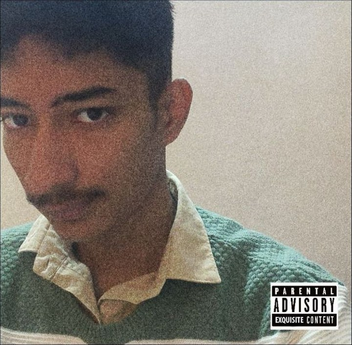

THE OFFICIAL LINK HUB

NAKUL
.
A little bit of everything. All in one place.
CONNECT WITH ME
Instagram
@thewantedshit
↗
Snapchat
@frnotnakul
↗
Spotify Playlist
The soundtrack
↗
GOOD VIBES ONLY — SEE YOU AROUND.